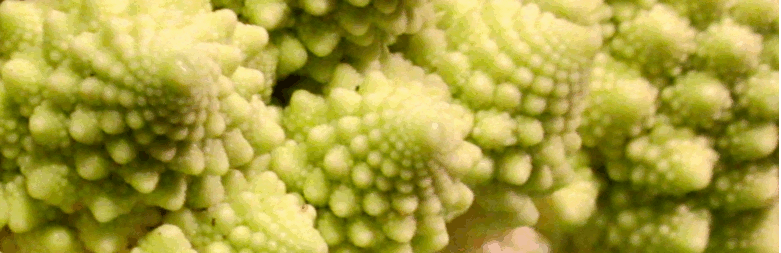

The top toxic moulds
Whether you use the word 'mold' or 'mould' to describe them, one important factor in human health is the presence on and in the body of toxin-producing fungi. These microbes can infect many places - on our skin, in our nose and mouth, in our bowel, in our brain and internal organs where they colonise the small blood vessels, and along the membranes lining our body cavities.
Fungus can only live internally by producing toxins that block the immune system. Medical science recognizes that the three most difficult organisms to remove are the fungi Aspergillus and Fusarium, and the yeast Candida Albicans. The fungi Eurotium and Stachybotris are next most toxic. Of the 100 or so known microbial toxins, Aspergillus and Fusarium produce almost 70 between them.
There also exist pathogenic fungi that do not produce toxins such as Cryptococcus, but they need either a suppressed immune system or a toxin-producing fungus to survive in the body cavities. The top toxic fungi can survive in our bodies even when our immunity is quite good.